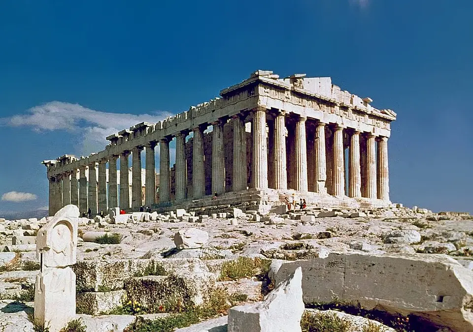
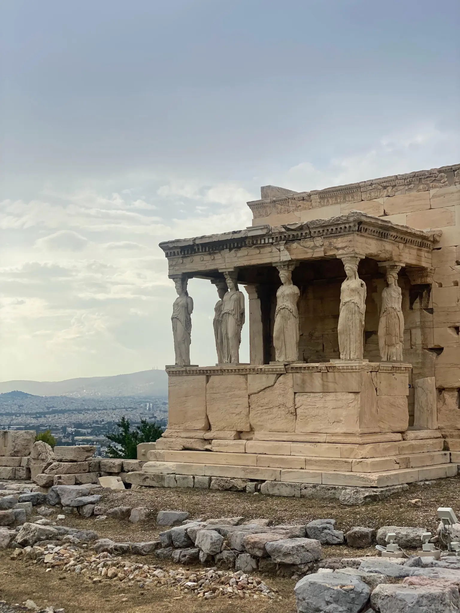
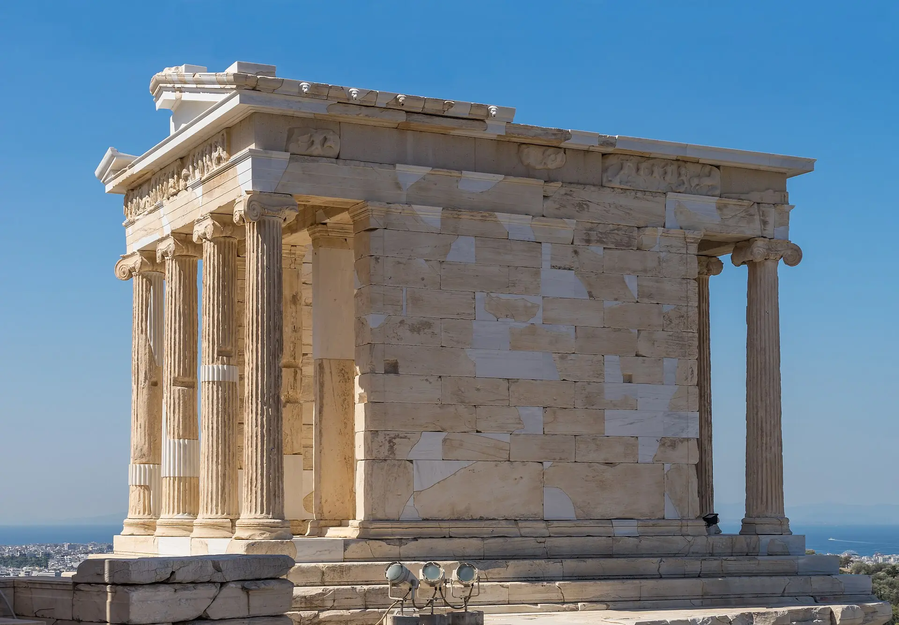
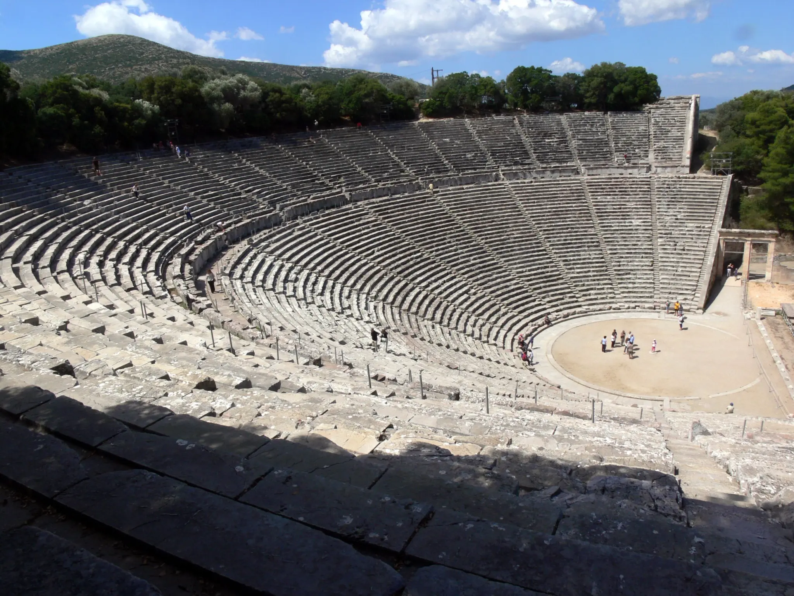
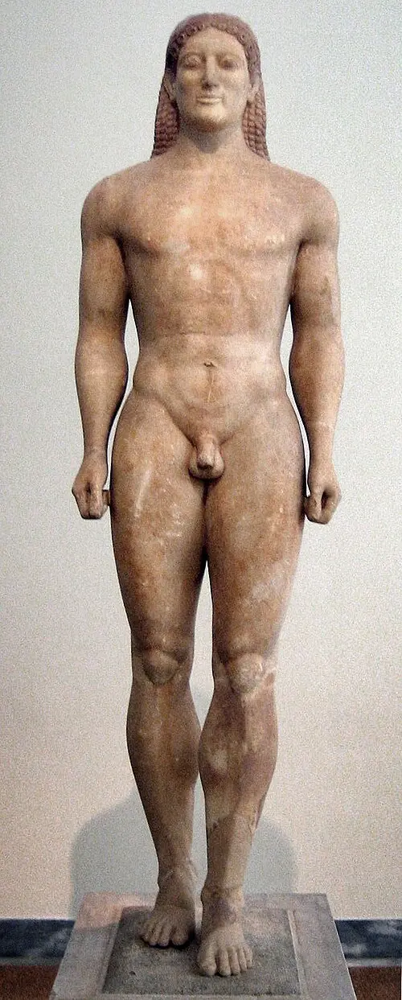
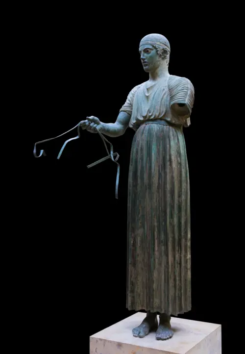
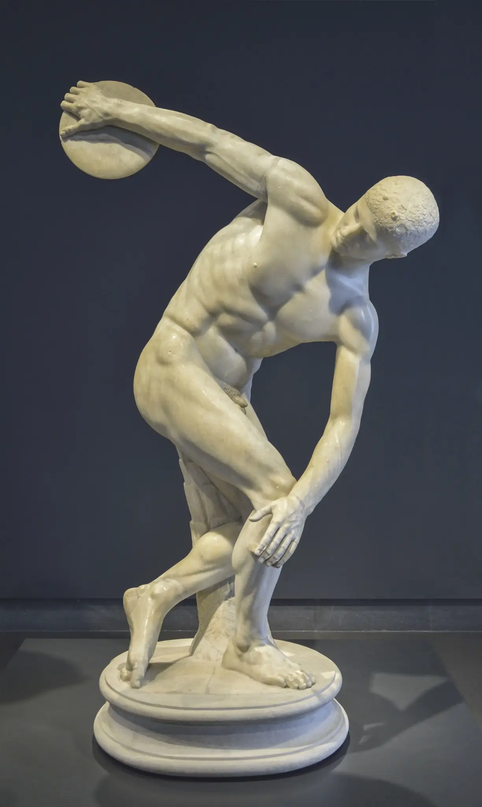

Contingut
Laboratori PAU · 14 obres imprescindibles
Mosaic amb les 14 obres de la llista · imatges numerades
En editar eXeLearning: elimina este marcador i usa «Insereix/edita una imatge».Pauta de resposta
- Identifica tipologia, autoria, cronologia, estil i ubicació.
- Analitza material, tècnica, composició, espai, moviment i llenguatge.
- Interpreta tema, iconografia, funció, encàrrec i recepció.
- Contextualitza polis o regne, religió, societat i moment històric.
- Relaciona antecedents, aportacions, influències i patrimoni.
Desplega cada obra. Després tanca la fitxa i intenta reconstruir-la amb cinc paraules clau.
1 · Partenó

Identificació. Ictinos i Cal·lícrates; supervisió de Fídies; 447–432 aC; Acròpolis d’Atenes; temple dòric amb elements jònics.
Anàlisi formal. Perípter octàstil, proporció rigorosa, marbre pentèlic i correccions òptiques. El fris jònic continu contrasta amb el fris dòric exterior.
Funció i significat. Casa d’Atena Pàrtenos i escenari simbòlic de les Panatenees; afirma ordre, identitat i poder atenés.
Context. Programa de Pèricles després de les guerres mèdiques, finançat en el marc de l’hegemonia de la Lliga de Delos.
Rellevància. Síntesi de l’arquitectura clàssica i referent durador; el seu patrimoni obliga a debatre espoli, restitució i conservació.
2 · Tribuna de les Cariàtides de l’Erectèon

Identificació. Arquitectura jònica; c. 421–406 aC; Acròpolis d’Atenes.
Anàlisi formal. Sis figures femenines actuen com a suports. Els plecs verticals evoquen estries, mentre cama, maluc i pentinat equilibren càrrega i naturalisme.
Funció i significat. Monumentalitza un espai de cultes múltiples i transforma el suport arquitectònic en figura carregada de significat.
Context. L’Erectèon s’adapta a terreny irregular i llocs sagrats antics durant la guerra del Peloponés.
Rellevància. Exemple essencial d’integració entre arquitectura i escultura; ha generat múltiples reinterpretacions del motiu de la cariàtide.
3 · Temple d’Atena Nike

Identificació. Atribuït a Cal·lícrates; c. 427–424 aC; temple jònic amfipròstil.
Anàlisi formal. Petita escala, quatre columnes a cada façana, proporcions esveltes i fris continu. La ubicació accentua la silueta.
Funció i significat. Culte a Atena victoriosa i commemoració de la capacitat militar d’Atenes.
Context. S’alça al bastió d’entrada de l’Acròpolis en un context bèl·lic.
Rellevància. Mostra com escala, ordre i emplaçament poden produir monumentalitat sense grans dimensions.
4 · Teatre d’Epidaure

Identificació. Atribuït a Policlet el Jove; segle IV aC; santuari d’Asclepi.
Anàlisi formal. Càvea semicircular adaptada al pendent, orquestra circular i escena; geometria radial, visibilitat i integració paisatgística.
Funció i significat. Representacions vinculades a festivitats religioses i experiència comunitària.
Context. El teatre forma part d’un santuari terapèutic i d’una cultura cívica de la paraula i la representació.
Rellevància. Model paradigmàtic del teatre grec i de la relació entre arquitectura, paisatge i públic.
5 · Kouros d’Anàvissos

Identificació. C. 530 aC; marbre; Museu Arqueològic Nacional d’Atenes; estàtua funerària.
Anàlisi formal. Nu frontal, cama esquerra avançada, braços laterals, simetria, anatomia esquemàtica i somriure arcaic; conserva rastres de policromia.
Funció i significat. Commemora Kroisos, jove mort en combat; no és un retrat individual modern, sinó un tipus ideal de joventut heroica.
Context. Etapa arcaica, contacte amb models egipcis i desenvolupament autònom del nu masculí grec.
Rellevància. Permet explicar el pas del bloc frontal a una figura cada vegada més orgànica i el caràcter funerari del tipus.
6 · Auriga de Delfos

Identificació. C. 478–474 aC; bronze; Museu Arqueològic de Delfos; ofrena votiva.
Anàlisi formal. Figura dreta, gest contingut, plecs verticals, peus naturalistes i ulls incrustats. El bronze afavorix precisió i presència.
Funció i significat. Formava part d’un grup dedicat després d’una victòria atlètica; exalta autocontrol i prestigi del comitent.
Context. Estil sever, transició entre arcaisme i classicisme.
Rellevància. Obra clau per la rara conservació d’un original grec en bronze i per la nova gravetat expressiva.
7 · Discòbol

Identificació. Miró; c. 460–450 aC; original de bronze conegut per còpies romanes.
Anàlisi formal. Cos recollit en un arc i diagonals; instant de màxima tensió abans del llançament. Anatomia idealitzada i rostre seré.
Funció i significat. Celebra exercici i disciplina; convertix una acció fugaç en estructura intel·ligible.
Context. Primer classicisme i cultura atlètica de la polis.
Rellevància. Innovació en la representació del moviment, encara organitzada per a una lectura principal.
8 · Dorífor
Identificació. Policlet; c. 450–440 aC; original de bronze conegut per còpies romanes.
Anàlisi formal. Cànon proporcional, contrapposto i quiasme: tensions i relaxacions creuades creen equilibri dinàmic.
Funció i significat. Possible portador de llança; materialitza una teoria del cos perfecte més que un individu concret.
Context. Classicisme ple i reflexió racional sobre proporció, harmonia i bellesa.
Rellevància. Model decisiu del cànon occidental; cal analitzar també les exclusions que convertix en norma.
9 · Mètopa del Partenó
Identificació. Taller de Fídies; c. 447–442 aC; relleu arquitectònic en marbre.
Anàlisi formal. Alt relleu adaptat al quadrat, oposició de cossos, ritme i tensió. La policromia original reforçava la lectura.
Funció i significat. Els combats mítics simbolitzen el triomf de l’ordre sobre el caos i poden al·ludir a victòries històriques.
Context. Programa polític i religiós de l’Acròpolis de Pèricles.
Rellevància. Integra narració, arquitectura i ideologia; permet estudiar conservació fragmentària i descontextualització museística.
10 · Hermes amb Dionís infant
Identificació. Atribuït a Praxíteles; segle IV aC; marbre; Museu d’Olímpia.
Anàlisi formal. Corba praxiteliana, suport lateral, superfícies suaus i relació de mirades i gestos; composició relaxada.
Funció i significat. Escena divina tractada amb intimitat i humanització; possiblement vinculada al culte.
Context. Canvi de sensibilitat del segle IV i creixement de l’encàrrec diversificat.
Rellevància. Exemplifica gràcia, sensualitat i afecte com a alternatives a l’heroisme del segle V.
11 · Apoxiòmenos
Identificació. Lisip; c. 330 aC; original de bronze conegut per còpia romana.
Anàlisi formal. Cànon esvelt, cap menut i braços estesos que penetren l’espai; exigeix visió circumdant.
Funció i significat. Atleta que es neteja amb l’estrígil després de l’exercici; moment quotidià, no victòria solemne.
Context. Final del classicisme i entorn macedònic d’Alexandre.
Rellevància. Renova cànon, relació amb l’espai i punt de vista, i prepara solucions hel·lenístiques.
12 · Victòria de Samotràcia
Identificació. C. 190 aC; marbre; Museu del Louvre; monument votiu.
Anàlisi formal. Figura alada sobre proa, composició diagonal, draps adherits i agitats, contrast de textures i forta interacció amb l’aire i l’espai.
Funció i significat. Commemora una victòria naval i produïa una aparició teatral al santuari.
Context. Món hel·lenístic i competició monumental entre poders marítims.
Rellevància. Síntesi de moviment, emplaçament i efecte dramàtic; la presentació museística moderna altera la recepció original.
13 · Venus de Milo
Identificació. C. 130–100 aC; marbre; Museu del Louvre.
Anàlisi formal. Torsió suau, contrapès del drapejat, contrast entre nu i tela i combinació de serenitat i moviment.
Funció i significat. Probable Afrodita; atribut perdut, fet que obliga a distingir identificació probable i certesa.
Context. Hel·lenisme tardà amb recuperació deliberada de fórmules clàssiques.
Rellevància. Demostra la pluralitat hel·lenística i permet debatre restauració, fragment i construcció museística de la bellesa.
14 · Fris de l’altar de Zeus a Pèrgam: Atena i Gea
Identificació. C. 180–160 aC; marbre; Pergamonmuseum; alt relleu de la Gigantomàquia.
Anàlisi formal. Diagonals, anatomies tenses, plecs profunds, clarobscur i figures que desborden el marc. Atena domina Alcioneu mentre Gea suplica.
Funció i significat. La victòria divina legitima simbòlicament l’ordre dels sobirans de Pèrgam.
Context. Monarquia hel·lenística, programa dinàstic i competició cultural amb altres centres.
Rellevància. Cim del dramatisme hel·lenístic i cas central per estudiar trasllat patrimonial, reconstrucció i context original.
Quina estructura produïx un comentari més sòlid?
La PAU exigix coneixement, però sobretot selecció i connexió d’evidències visuals i contextuals.